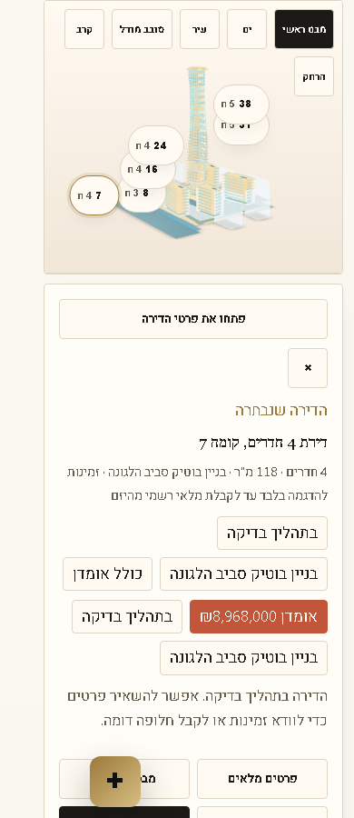
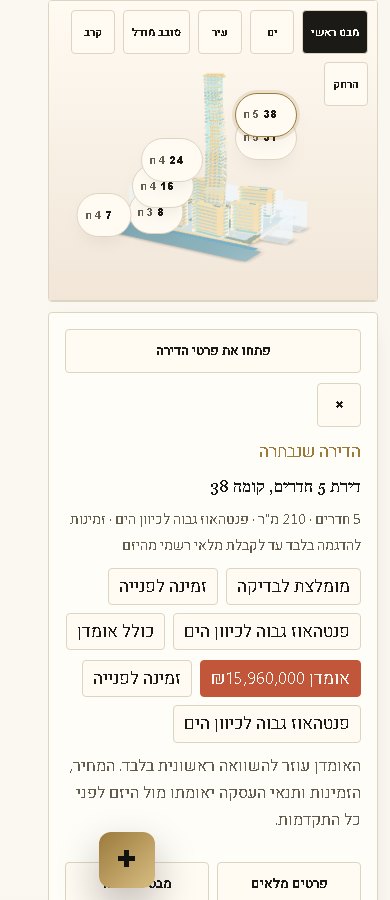
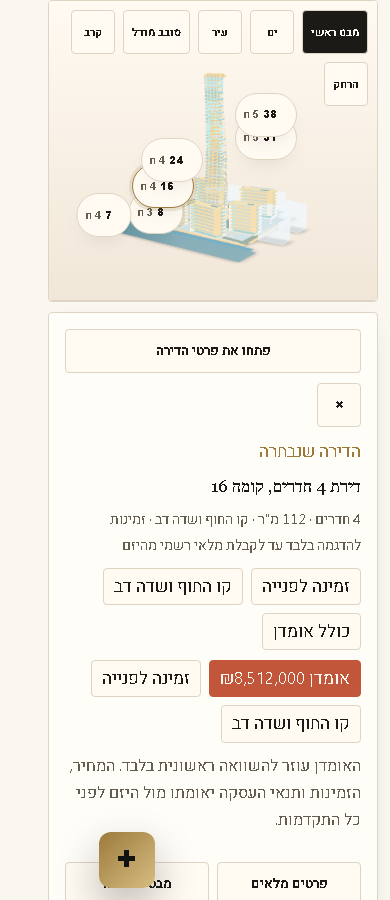
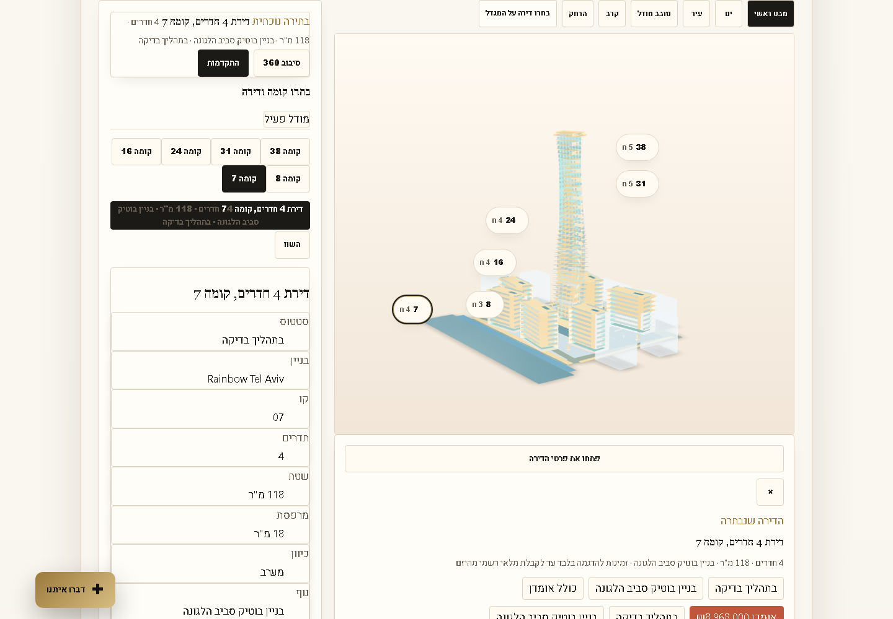

Passed: live apartment selection works for the authored demo units
Rainbow Showroom live selection QA
Checked on the live NadLan site on 2026-06-24. The test tried visible apartment markers and harder mobile taps directly on the model surface.
What passed
All six visible apartment markers selected the expected unit on desktop 1440 and mobile 390. The model camera updated with each unit's orbit and target.
The mobile free-tap grid returned deadModelSurfacePoints: []. The important upper tower points that were previously blocked now hit the model and select a unit.




Honest limitation
This proves marker selection and nearest authored demo-unit selection from model-surface taps. It does not prove true click-any-window GLB mesh picking, because the current GLB does not include per-apartment mesh metadata.
Needed for real window-level picking
- A GLB authored with per-unit mesh names or node metadata.
- BIM or facade geometry mapped to unit IDs.
- An official unit polygon layer aligned to the model or facade.
Separate UX issue noticed
The selected-unit panel works, but some info chips repeat. That is a polish issue for the next showroom cleanup slice. It did not block apartment selection in this test.